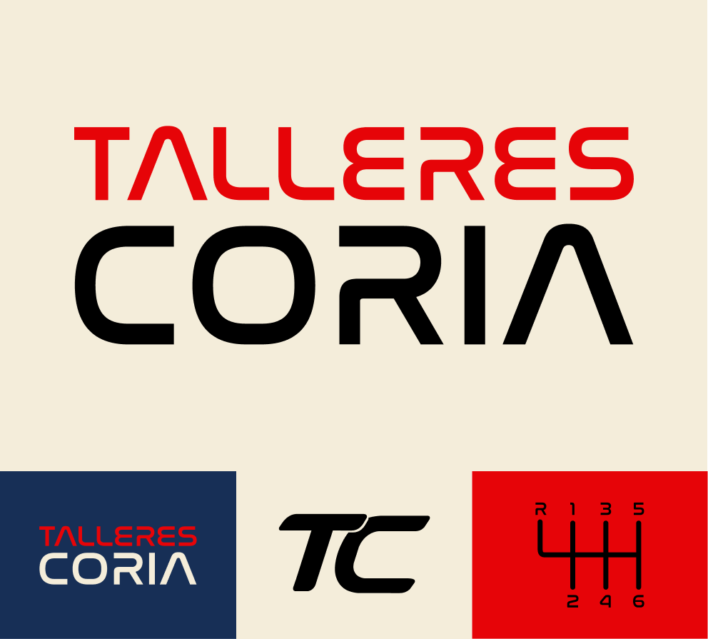
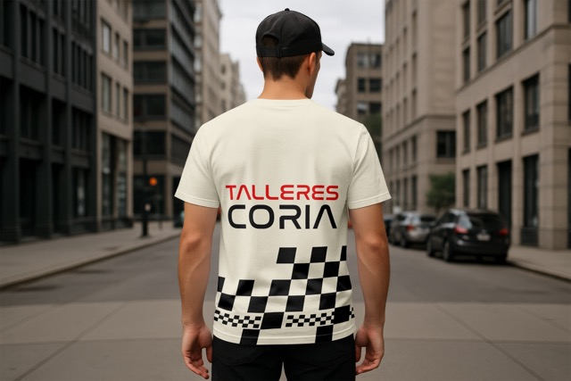
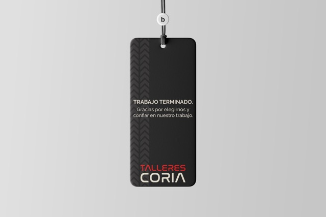

Construir una imagen a la altura de su trayectoria.
El desafío fue desarrollar una identidad visual que transmitiera confianza, profesionalismo y cercanía, conservando la esencia de un negocio familiar.
Diseño de identidad visual para un taller familiar. Exploración gráfica, desarrollo de isotipo y manual de marca.

Talleres Coria es un taller familiar con una trayectoria de varias generaciones. Con una historia construida a través del oficio y la experiencia, el proyecto surge de la necesidad de renovar su imagen y acompañar una nueva etapa de crecimiento.
El desafío fue desarrollar una identidad visual que transmitiera confianza, profesionalismo y cercanía, conservando la esencia de un negocio familiar.
Trabajé en el desarrollo de la identidad y el manual de marca, definiendo criterios de uso para el logotipo, la paleta cromática, las tipografías y los recursos gráficos. También diseñé distintas aplicaciones para la marca.
El manual permitió establecer una línea visual clara para todas las aplicaciones, proyectar una imagen más profesional y facilitar el reconocimiento de la marca en sus diferentes puntos de contacto.

